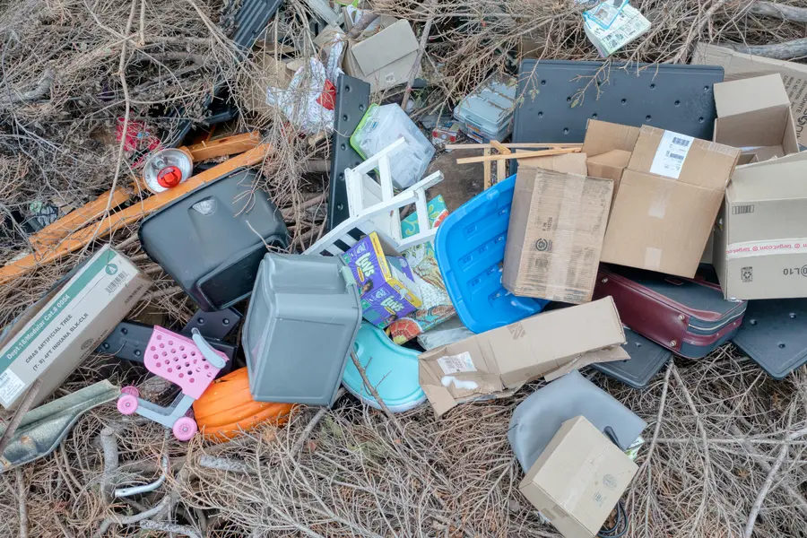

Environmental Enforcement Consultancy
30 years frontline experience supporting UK councils tackling fly tipping, abandoned vehicles and environmental crime.
Request a ConsultationPractical, operational support for local authorities managing backlog, enforcement pressure and organisational change.
Reduce backlog, improve investigations and increase enforcement outcomes through targeted operational support.

Practical, real world training covering PACE, evidence gathering, interviews and prosecution ready case building.
Improve case handling efficiency, reduce costs and clear backlogs while remaining compliant with legislation.
Environmental Protection within UK local government
Real world enforcement delivery, not theory
Rapid improvements to performance and outcomes
District councils, unitary authorities, enforcement teams and environmental services managers across the UK.
If you are managing backlog, service pressure or organisational change, we can help stabilise and improve delivery.
Start a Conversation